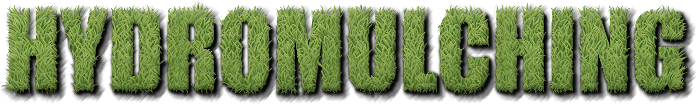
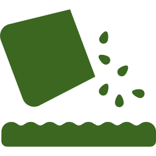

West Texas Lawn
Free estimates. 30+ years of experience. Guaranteed work.
the
experts
Let West Texas Lawn bring your lawn back to life!
Located in Abilene, TX, we offer top quality Texas fiber mulch with a variety of grasses to choose from. With more than 30 years of experience hydromulching over 2,000 residential and business lawns, schools, athletic fields and more, we offer free estimates and guarantee our work.
Call us for a free estimate!
>> Why should you hydromulch/hydroseed?
Quality & Coverage
Beautiful turfs. No heavy costs.
Hydroseeding provides a greener, thicker, longer lasting, and more uniform lawn than sodding or hand seeding because the root is established deeper into the soil, creating an ideal growing environment capable of retaining 10 times its weight in water.
Cost-effective & Quick
Faster and easier to install, hydroseeding will revive your lawn without the expense, time, material costs, or installation demands of sodding or hand seeing. Germination can occur as quickly as 7 days after installation thanks to slurry materials that enhance the process and stimulate seeds.
Erosion Control & Safety
Hydroseeding holds moisture deep into the ground and protects against soil loss from wind, rain, sun, and pests through binding seed, mulch, tackifiers, and other soil conditioners. It is a non-toxic and safe method of growing grass that is harmless to children, pets, and the environment.
Our Bermuda Grass Seeds <<
The Sahara
An improvement over common bermuda grasses, the Sahara grass is of medium quality and its variety of uses make it a great economical choice.
The Sahara is wear and drought tolerant, has a dense, dark green turf with medium-fine texture, does well in all types of soil and grows well in temperate - subtropical and tropical climate zones. It was the first improved seed variety developed exclusively for turf and lawn grass but is also commonly used as an economical pasture grass.
- 
Ideal for home lawns, golf course fairways, parks, playgrounds, athletic fields, pastures, cemetaries, highway right of ways
Germinates in 7 to 10 days; desirable turf will be established in 60 to 70 days (with proper management)
Mowing height: 1 inch - 1 1/2 inches
The Bermuda Triangle
The Bermuda Triangle grass seed blend is considered to be one of the best medium to higher grass seeds available.
It is a professional turf blend of three bermuda grass seed varieties including the Sultan, Sydney, and Mohawk. The genetic diversity allows for a wide range of adaptation including not only drought and wear tolerance, but also a moderate tolerance for cold weather. It has a medium-fine texture and a dark green color.
Ideal for home lawns, golf course fairways, playgrounds, athletic fields, commercial landscapes
Germinates in 10 to 14 days; full coverage in 28 to 42 days (with proper management)
Mowing height: 1/2 inch - 2 inches
The Princess
The Princess is a premium quality grass seed and the first fine textured hybrid bermuda grass variety to be available in seeded form.
It is characterized by its thick but fine, low-mowable dark green turf. It has outstanding drought tolerance and is the highest overall turf quality of all commercially available seed varieties in the US.
Ideal for manicured home lawns, golf course fairways, well-maintained athletic fields and parks
Germinates in 7 to 10 days; full coverage in 28 to 42 days (with proper management)
Mowing height: 3/16 inch - 1 inch
Contact Us
We'd love to chat about your hydromulching needs.
Free estimates. 30+ years of experience. Guaranteed work.
West Texas Lawn
(325)-555-5555
Cell: (325)-555-5555